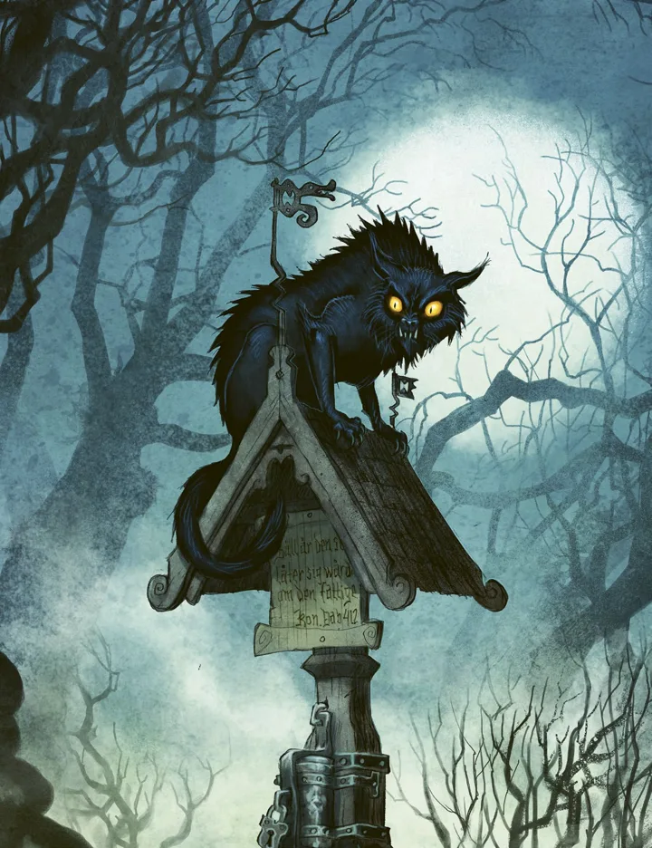
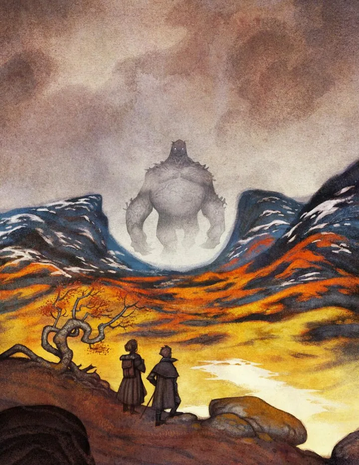

Mysterien

GrundregelwerkDer Tanz der TräumeUpsala
Countdown 0 / 4 · Hinweise 0 / 17
FrühlingEin Tanz mit dem TodDalarna
SommerFeuerherzSmåland
HerbstDer Teufel im MoorJütland
WinterEin WintermärchenIngermanland
Bücher



